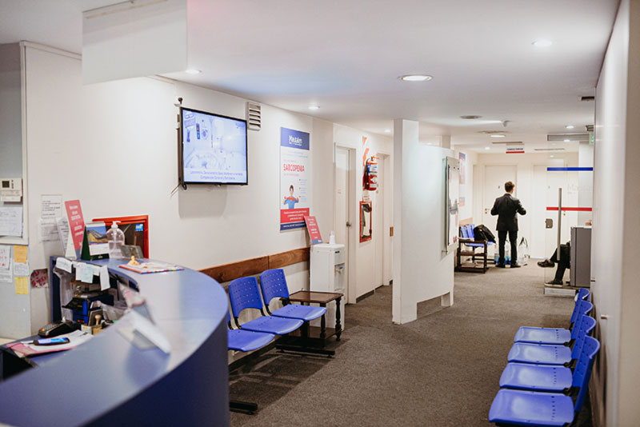
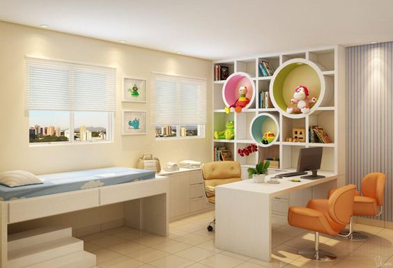
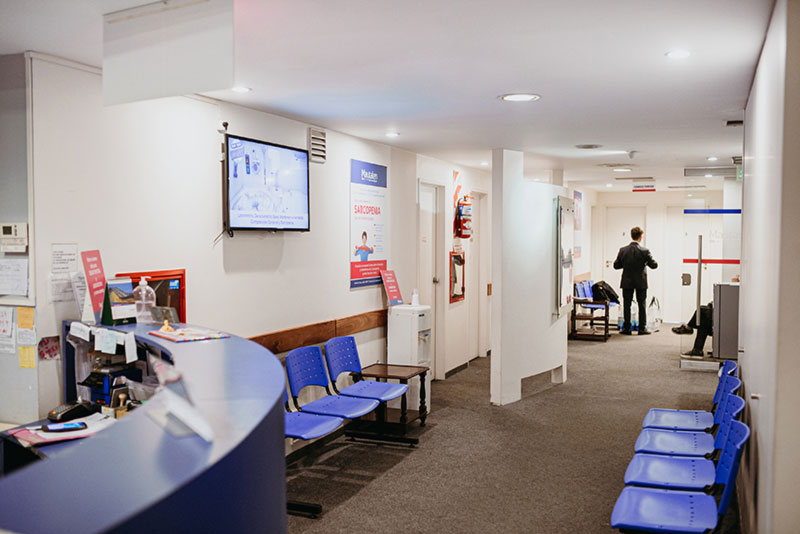
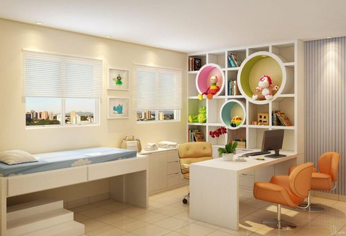

Consultorios
En el Consultorio Médico de la Familia, nos enorgullece proporcionar a nuestros pacientes instalaciones modernas y equipadas con tecnología de vanguardia. Nuestro objetivo es garantizar que nuestros pacientes se sientan cómodos y seguros mientras reciben atención médica de alta calidad. A continuación, presentamos nuestras instalaciones y consultorios.
Recepción
Nuestra recepción es el primer lugar donde los pacientes son recibidos y atendidos por nuestro personal de recepción. La recepción es amplia y cuenta con una sala de espera cómoda, donde los pacientes pueden esperar para ser atendidos. Tenemos disponibles revistas y televisión para hacer la espera más agradable. Nuestro personal de recepción está siempre disponible para ayudar a los pacientes con cualquier pregunta o preocupación que puedan tener.
Consultorios
Contamos con varios consultorios que están diseñados para satisfacer las necesidades de nuestros pacientes y de nuestros profesionales médicos. Cada consultorio cuenta con equipo médico de última generación, que se actualiza regularmente para garantizar que nuestros pacientes reciban la mejor atención médica posible. Además, todos los consultorios tienen aire acondicionado y están diseñados para proporcionar un ambiente confortable y tranquilo para nuestros pacientes.
Consultorio de Pediatría
Nuestro consultorio de pediatría está diseñado especialmente para nuestros pacientes más jóvenes. El consultorio es colorido y cuenta con decoraciones alegres que ayudan a los niños a sentirse cómodos y seguros durante su visita. El consultorio está equipado con equipos médicos de alta tecnología para realizar exámenes físicos, pruebas de diagnóstico y otras evaluaciones. Nuestros pediatras son profesionales altamente capacitados que se especializan en el cuidado de niños y adolescentes.
Consultorio de Cardiología
Nuestro consultorio de cardiología está diseñado específicamente para brindar atención médica de alta calidad a pacientes con enfermedades cardíacas. El consultorio está equipado con electrocardiogramas, monitores de ritmo cardíaco, ecocardiogramas y otros equipos de diagnóstico. Nuestros cardiólogos son expertos en el diagnóstico y tratamiento de enfermedades cardíacas y trabajan con los pacientes para mejorar su salud cardiovascular.
Consultorio de Gastroenterología
Nuestro consultorio de gastroenterología está equipado con tecnología de última generación para el diagnóstico y tratamiento de enfermedades digestivas. El consultorio cuenta con endoscopios, colonoscopios y otros equipos de diagnóstico para evaluar y tratar problemas gastrointestinales. Nuestros gastroenterólogos son expertos en el tratamiento de afecciones gastrointestinales y trabajan con los pacientes para mejorar su salud digestiva.
Consultorio de Neurología
Nuestro consultorio de neurología está diseñado para brindar atención médica a pacientes con afecciones neurológicas. El consultorio está equipado con equipos de diagnóstico avanzados, como tomografías computarizadas y resonancias magnéticas, para el diagnóstico y tratamiento de enfermedades neurológicas. Nuestros neurólogos son expertos en el tratamiento de enfermedades neurológicas y trabajan con los pacientes para mejorar su salud cerebral.
Consultorio de Medicina General
Nuestro consultorio de medicina general está diseñado para brindar atención médica a pacientes de todas las edades y tipos de enfermedades y afecciones. Nuestros médicos generales están altamente capacitados para tratar afecciones como la gripe, el resfriado común, infecciones de la piel, alergias y problemas de salud mental. Además, ofrecemos servicios de chequeos de salud preventivos y recomendamos revisiones regulares para mantener a nuestros pacientes saludables y prevenir enfermedades.
Instalaciones adicionales
Además de nuestros consultorios, también contamos con instalaciones adicionales que ayudan a brindar una experiencia de atención médica integral a nuestros pacientes. Tenemos una sala de emergencias equipada con tecnología de vanguardia para tratar a pacientes con afecciones médicas urgentes. También contamos con una sala de rayos X que nos permite realizar radiografías en el consultorio.
Además, nuestros pacientes pueden acceder a nuestro laboratorio en el consultorio, lo que les permite realizar pruebas de diagnóstico importantes sin tener que visitar otro centro médico. Contamos con personal médico capacitado y experimentado que trabaja en estrecha colaboración con nuestros médicos para brindar atención médica de alta calidad y personalizada a cada paciente.
Conclusiones
En el Consultorio Médico de la Familia, nos esforzamos por proporcionar instalaciones modernas y equipadas con tecnología de vanguardia para garantizar la comodidad y la seguridad de nuestros pacientes mientras reciben atención médica de alta calidad. Nuestros consultorios están diseñados para satisfacer las necesidades de nuestros pacientes y de nuestros profesionales médicos, lo que permite una atención médica especializada y personalizada.
Además de nuestros consultorios, también ofrecemos instalaciones adicionales como nuestra sala de emergencias, sala de rayos X y laboratorio en el consultorio, lo que nos permite brindar una experiencia de atención médica integral y completa a nuestros pacientes. Nuestro personal médico está altamente capacitado y experimentado en el diagnóstico y tratamiento de diversas afecciones médicas.
Nos enorgullece ofrecer a nuestros pacientes una experiencia de atención médica excepcional en nuestras instalaciones modernas y equipadas con tecnología de vanguardia. Si está buscando un Consultorio Médico de la Familia confiable y especializado, no dude en visitarnos en nuestras instalaciones. Estamos comprometidos con su salud y bienestar.

 


